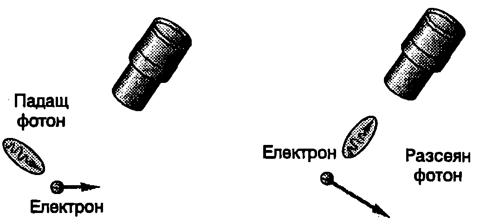
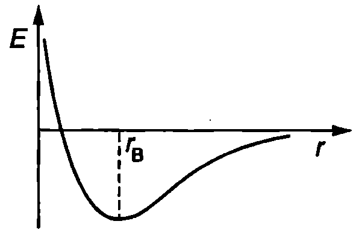

При всички физични измервания се допуска грешка. Експериментаторът никога не може абсолютно точно да измери стойността на физичните величини например координатата и импулса на една частица. Според класическата механика грешката при измерванията се дължи единствено на несъвършенството на измервателните уреди. Класическата механика по принцип допуска измервания с произволно голяма точност (стига да разполагаме с необходимите за целта уреди). Според квантовата теория обаче не е възможно положението и импулсът (скоростта) на една частица да се определят едновременно с произволно голяма точност. Това ограничение в точността не е свързано с несъвършенството на измервателните уреди, а има принципен характер. То отразява същността на квантовите обекти, които неразривно съчетават в себе си вълнови и корпускулярни свойства.
През 1927 година германският физик Вернер Хайзенберг (1901-1976) формулира следното твърдение, което днес е известно като принцип за неопределеност на Хайзенберг: Ако -координатата на една частица е измерена с точност и едновременно с това -компонентата на импулса на частицата е измерена с точност , то произведението от и никога не може да е по-малко от константата на Планк , разделена на :
Според принципа за неопределеност природата на квантовите обекти в такава, че е невъзможно едновременно да се определи точното положение и точният импулс на една частица. Когато неопределеността на координатата е много малка, тогава неопределеността , на импулса е голяма и обратно. Аналогични неравенства и са в сила за - и -компонентите.
Мислен опит на Хайзенберг
За да обясни нагледно смисъла на принципа за неопределеност, Хайзенберг разглежда следния мислен опит. Електрон се наблюдава с помощта на “идеален” микроскоп. Микроскопът е толкова съвършен, че за определяне положението на електрона е достатъчно само един фотон да се отрази (удари) от електрона и през микроскопа да попадне в окото на наблюдателя (Фиг. \ref{fig:105.1}). Преди удара фотонът има импулс . При удара той предава неизвестна част от импулса си на електрона и x-компонентата на импулса на електрона се променя. Така след удара възниква неопределеност в импулса на електрона, която е от порядъка на импулса на падащия фотон: . От друга страна, тъй като светлината притежава вълнови свойства, точността, с която може да се определи положението на електрона, е приблизително равна на дължината на вълната на използваното лъчение, т.е. . За да се намали неопределеността в координатата , трябва да се използва лъчение с много малка дължина на вълната — например -лъчи. Гама квантите обаче имат много голям импулс, поради което неопределеността в импулса на електрона след удара нараства. Обратно, ако се използва лъчение с голяма дължина на вълната (например видима светлина), тогава неопределеността в импулса на електрона ще е малка, но за сметка на това неговото положение ще е определено твърде неточно. Като се умножат двете неопределености, се получава
\begin{figure}[h!] \centering  \caption{Мислен опит на Хайзенберг.} \label{fig:105.1} \end{figure}
По-прецизният анализ, основан на законите на квантовата механика, показва, че произведението на неопределеностите , удовлетворява неравенството \eqref{eq:105.1}.
\begin{psexample}[label=ex:105.1]{}{} С помощта на принципа за неопределеност оценете енергията на основното състояние и размера на водородния атом. \end{psexample}
Решение
Принципът за неопределеност се използва за приблизителна оценка на стойностите на някои величини, характеризиращи микрочастиците. Това става по следния начин:
-
Когато движението на частицата е ограничено в определена област от пространството (казва се, че частицата е локализирана в тази област), неопределеността в положението на частицата се приема за равна на размера на областта на локализация (например на радиуса на областта, когато тя е сферична).
-
Неопределеността в импулса се приема за минимална възможна стойност на самия импулс на частицата.
-
В неравенство \eqref{eq:105.1}, изразяващо принципа за неопределеност, се замества . Дори знакът за неравенство се заменя със знак за равенство: .
-
В основното състояние енергията на частицата (или на системата от частици) има минимум. Определя се пълната енергия (кинетична енергия + потенциална енергия), отчита се връзката между и , произтичаща от принципа за неопределеност, намира се минимумът на получената функция и се пресмятат търсените величини.
В конкретния случай е радиусът на водородния атом. Енергията на атома е където първият член в дясната страна на равенството е кинетичната енергия на електрона, а вторият потенциалната енергия на кулоновото взаимодействие между електрона и ядрото (протона). С помощта на принципа за неопределеност изразяваме импулса на електрона, и го заместваме в уравнението за енергията. Получаваме
\begin{figure}[h!] \centering  \caption{} \label{fig:105.2} \end{figure}
Графиката на функцията е показана на Фиг. \ref{fig:105.2}. За да определим минимума на функцията , намираме нейната първа производна и я приравняваме на нула, т.е. откъдето определяме радиуса (радиус на Бор) на орбитата на електрона, когато водородният атом се намира в основното си състояние, т.е. в състоянието с минимална енергия:
Заместваме във формулата за пълната енергия на атома и определяме енергията на основното състояние В този случай направената оценка с помощта на принципа за неопределеност дава точния резултат за енергията на основното състояние на водородния атом, който се получава по методите на квантовата механика
Задачи
-
В мисления опит на Хайзенберг се използват рентгенови лъчи, за да се определи положението на електрон с точност . С каква точност може да се определи скоростта на електрона при подобен опит?
-
Мишокът Мики живее във вълшебен свят, за който константата на Планк има стойност . Може ли Мики да спи спокойно в дупката си? Колко е минималната му скорост, ако дупката е с радиус cm? Масата на Мики е kg.
-
Оценете минималните стойности на импулса , скоростта и кинетичната енергия , на неутрон, намиращ се в ядро с радиус m.
-
С помощта на принципа за неопределеността оценете минималната енергия на квантовомеханичен осцилатор. Разгледайте частица с маса , която извършва хармонично трептене по оста с кръгова честота . Потенциалната енергия на частицата се изменя по закона .